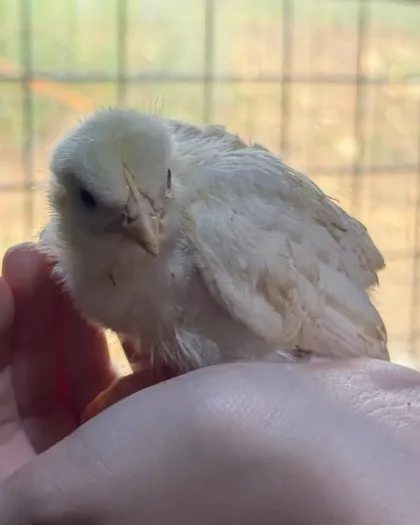

Domaća jaja
sa Velike Bukovice
Proizvodnja, prodaja i dostava domaćih, konzumnih jaja na području Travnika.
Kontaktirajte nas

Domaće. Onako kako treba.
Eko farma "Jezerac" nalazi se na kraju sela Velika Bukovica kod Travnika. Bavimo se proizvodnjom, prodajom i dostavom domaćih, konzumnih jaja. Prodaju i dostavu vršimo i za pravna i za fizička lica: prodavnice, restorane i domaćinstva.
Galerija
Kontakt
Za narudžbe i sva pitanja slobodno nas kontaktirajte.